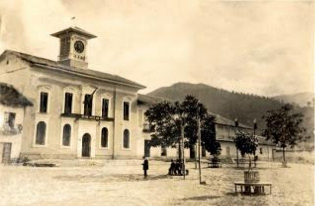

Historia
Historia
Epoca precolombina
 El territorio de Pacho estuvo habitado por dos tribus aborígenes descendientes de los Chibchas: Los" Rutes y los Gotaques". Sus gobernantes eran Uzaques o Jefes militares y el último de ellos fue "Pacho" cuyo nombre en su lengua significaba "Padre Bueno" a quien los españoles antepusieron el nombre de Diego. Él fue un gran organizador de la economía, valeroso defensor de su pueblo y promotor de la paz a quien se atribuye la fundación de Pacho, probablemente en 1624.
Igualmente hay quienes dan a 1.624 como fecha de la fundación de Pacho, en la Ordenanza # 24 de Julio 7 de 1.942, se consigna como fecha de su fundación, el 6 de Enero de 1.642, teniéndose de tal forma esta, como fecha guía de dicho acontecimiento; sin embargo, en documentos que datan del año de 1.582 (Tomado del texto de la monografía Histórica de Pacho "Vicisitudes de un municipio colombiano" Historia general de Pacho, escrito por el Doctor Álvaro Gómez Bemal), se menciona la existencia de Pacho no solo como pueblo, sino como caserío reconstruido a raíz de un incendio provocado por los indios en fechas anteriores. En 1.714 se crea la Parroquia de "San Antonio de Padua" siendo su primer Párroco el Padre Lucas Gómez.
 Macario Rojas, primer alcalde de Pacho y prócer de la Independencia
Macario Rojas, primer alcalde de Pacho y prócer de la Independencia
 Desde 1714 Pacho figura como Parroquia o sitio de libres, más tarde, como Población o Partido del Corregimiento de Zipaquirá, del Virreinato de Santafé o del Nuevo Reino de Granada creado según la Real Cédula de Segovia del 27 de mayo de 1717 por el rey de España Felipe II y, finalmente como Distrito Municipal a partir de 1807 siendo su primer alcalde don Macario Rojas. Don Macario Rojas se destacó en los comienzos del siglo XIX en tertulias literarias y representaciones escénicas en compañía de destacados intelectuales de Santafé de Bogotá. El 22 de septiembre de 1804 se representó en La Candelaria una comedia titulada “Oponerse a las estrellas” y otra el 26, titulada “El José de las mujeres”.
Desde 1714 Pacho figura como Parroquia o sitio de libres, más tarde, como Población o Partido del Corregimiento de Zipaquirá, del Virreinato de Santafé o del Nuevo Reino de Granada creado según la Real Cédula de Segovia del 27 de mayo de 1717 por el rey de España Felipe II y, finalmente como Distrito Municipal a partir de 1807 siendo su primer alcalde don Macario Rojas. Don Macario Rojas se destacó en los comienzos del siglo XIX en tertulias literarias y representaciones escénicas en compañía de destacados intelectuales de Santafé de Bogotá. El 22 de septiembre de 1804 se representó en La Candelaria una comedia titulada “Oponerse a las estrellas” y otra el 26, titulada “El José de las mujeres”.
La invasión que efectuó el español Juan Sámano de la Provincia de Popayán con miras a la reconquista de Santafé de Bogotá, trajo como consecuencia la Declaración de la independencia absoluta de Cundinamarca y la Campaña de Antonio Nariño en el Sur, los patriotas hicieron esfuerzos gigantescos para equipar una expedición que estuvo integrada sobre todo por tropas de Cundinamarca, el Socorro y Neiva. Nariño, investido con el título de Teniente General del ejército de Cundinamarca partió al sur; Macario Rojas acude al llamado de la patria, empuña las armas republicanas y participa con el grado de oficial en la Campaña del Sur acompañando a Nariño.
En la Campaña del sur ofrendaron su vida valerosos patriotas luchando contra el yugo español; Antonio Nariño fue hecho prisionero y llevado a Pasto, Macario Rojas murió en la acción de Las Cebollas en los Ejidos de Pasto según Carta de Miguel José Montalvo al General José Ramón de Leyva. Casa Museo del 20 de julio, Sala Nariño: “… Se me olvidaba decir a Ud. que en la acción de Las Cebollas nos mataron al Capitán Bonilla, al Teniente D. Macario Rojas, al Teniente Molina de Buga, …”.
Cuna de la industría siderúrgica
Pacho es la cuna de la Industria siderúrgica en Latinoamérica desde cuando en 1814, el Inglés Don Jacobo Wiesner encontró y comenzó a explotar los yacimientos de Hierro y plomo para abastecer al ejército de Nariño; estableció su fundición de la Ferrería donde se hicieron los rieles para el ferrocarril de la Sabana, Girardot y numerosos productos de la industria. Otra empresa de renombre ha sido la Polvorería Barragán, fundada en 1.875 por don Pedro Barragán y también la Siderúrgica "Corradine”.
El horno de la Ferrería fue el primero de su tipo en Colombia y se empezó a construir en 1833 por expertos franceses, como Don Cipriano Medardo Merlín; la construcción se terminó cuatro años después, en 1837. El horno está ubicado en el barrio de la Ferrería y fue declarado patrimonio histórico de Cundinamarca y Colombia por la Academia de historia en el año de 1996.
[Volver al inicio]